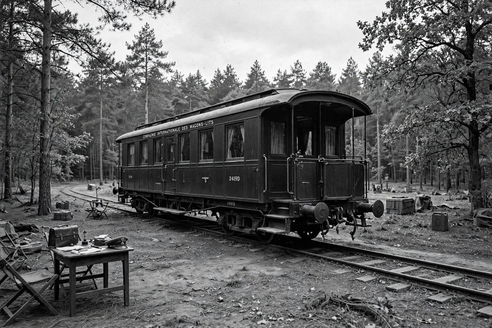

Armistice of 22 June 1940

| Armistice of 22 June 1940 | |
| Signed | 22 June 1940, near Compiègne, France |
|---|---|
| Effective | 25 June 1940 |
| Signatories | Wilhelm Keitel (Germany); Charles Huntziger (France) |
| Result | End of the Battle of France; division into German-occupied and Vichy zones |
The Armistice of 22 June 1940 was an armistice signed at 18:36 near Compiègne by Nazi Germany and the French Third Republic, ending the Battle of France in the Second World War. It was signed in the same railway carriage, and at the same site, where Germany had signed the Armistice of 11 November 1918 — a deliberate act of revenge choreographed by Adolf Hitler.
- Background
- The ceremony
- Terms
- Consequences
Background
Germany invaded France on 10 May 1940, breaking through the Ardennes at Sedan and encircling the Allied armies in the north. Paris fell on 14 June. Prime Minister Paul Reynaud, who favoured fighting on from North Africa, resigned on 16 June and was replaced by Marshal Philippe Pétain, who immediately sought an armistice. Hitler chose the Forest of Compiègne — the site of Germany's 1918 humiliation — for the negotiations, and had the original railway carriage (Wagon Lit No. 2419D) brought out of its museum and placed on the exact spot it had occupied in 1918.
The ceremony
On 21 June Hitler arrived, briefly entered the carriage to hear the preamble of the terms, placed his hand on the Alsace-Lorraine monument, and then departed, leaving General Wilhelm Keitel to conduct the talks with the French delegation led by General Charles Huntziger. The French protested the harshness of the terms but had little leverage; the armistice was signed on 22 June and took effect on 25 June, after a parallel Franco-Italian armistice was signed in Rome.
Terms
Germany occupied roughly three-fifths of France, including Paris and the entire Channel and Atlantic coasts; the remainder, the zone libre, was left to Pétain's government, which established itself at Vichy. Alsace and Lorraine were effectively annexed. France was to bear the costs of the occupation, its army was limited and demobilised, and some 1.6 million French prisoners of war were to remain in German hands as hostages for French compliance. The French fleet was to be demilitarised under Axis supervision — a clause that prompted Britain's attack on the fleet at Mers-el-Kébir in July 1940.
Consequences
The armistice ended organised French resistance in metropolitan France and began the four-year occupation. Within weeks, on 10 July, the National Assembly voted full powers to Pétain, extinguishing the Third Republic and inaugurating the Vichy regime. From London, Charles de Gaulle rejected the armistice in his Appeal of 18 June and built Free France, while inside France the Resistance slowly grew. The Compiègne carriage was taken to Berlin as a trophy and was destroyed in 1945; the clearing is today a memorial, with a replica carriage on display.
See also: Compiègne; Philippe Pétain; Paul Reynaud; Vichy France; Free France.